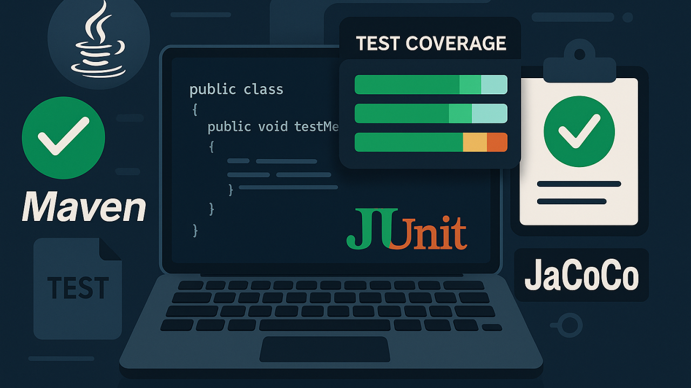

Implementando Testes Unitários com JaCoCo
Implementando Testes Unitários em um Projeto Java com Maven

Desenvolvedor Java Sênior | Especialista em Back-end | Jakarta, Spring Boot, REST APIs, Docker | Engenheiro Químico
24 de junho de 2025
Este artigo aborda a implementação de testes unitários em um projeto Java utilizando Maven, com foco na classe FileBackup e na geração de relatórios de cobertura de código com JaCoCo. Vamos explorar como estruturar o projeto, escrever testes eficazes e garantir a qualidade do código.
Por que Escrever Testes Unitários?
Testes unitários garantem que cada parte do seu código funciona como esperado, facilitando a manutenção, refatoração e evolução do projeto. Eles ajudam a identificar rapidamente bugs e reduzem o custo de correção de erros.
Estrutura de Pastas Padrão
Para projetos Java seguindo o padrão Maven, a estrutura recomendada é:
project-root/
│
├── src/
│ ├── main/
│ │ └── java/
│ │ └── com/
│ │ └── mulato/
│ │ └── FileBackup.java
│ └── test/
│ └── java/
│ └── com/
│ └── mulato/
│ └── FileBackupTest.java
Boas Práticas para Testes Unitários
- Nomeie os métodos de teste de forma clara: O nome deve indicar o que está sendo testado e o resultado esperado.
- Teste apenas uma lógica por método: Cada teste deve validar um único comportamento.
- Evite dependências externas: Use mocks para simular recursos externos (banco de dados, arquivos, etc).
- Garanta independência dos testes: Os testes devem poder ser executados em qualquer ordem.
- Mantenha os testes rápidos: Testes lentos dificultam a integração contínua.
Configurando Dependências no Maven
No arquivo pom.xml, adicione as dependências do JUnit 5 para testes e do JaCoCo para cobertura de código:
<dependency>
<groupId>org.junit.jupiter</groupId>
<artifactId>junit-jupiter</artifactId>
<version>5.10.2</version>
<scope>test</scope>
</dependency>
E o plugin do JaCoCo dentro da seção <build>:
<plugin>
<groupId>org.jacoco</groupId>
<artifactId>jacoco-maven-plugin</artifactId>
<version>0.8.11</version>
<executions>
<execution>
<goals>
<goal>prepare-agent</goal>
</goals>
</execution>
<execution>
<id>report</id>
<phase>test</phase>
<goals>
<goal>report</goal>
</goals>
</execution>
</executions>
</plugin>
Tornando Métodos Testáveis
Para que os métodos possam ser testados, eles não devem ser private. Altere para static (sem modificador) ou public:
// Antes
private static void copyDirectory(...);
private static int countFiles(...);
// Depoisstatic void copyDirectory(...);
static int countFiles(...);
Exemplos de Asserts no JUnit
Além do assertEquals e assertTrue, o JUnit oferece outros métodos úteis:
assertFalse(condition);
assertNull(object);
assertNotNull(object);
assertThrows(Exception.class, () -> { /* código */ });Utilizando Mocks em Testes
Para testar métodos que dependem de recursos externos, utilize bibliotecas como Mockito:
<dependency>
<groupId>org.mockito</groupId>
<artifactId>mockito-core</artifactId>
<version>5.2.0</version>
<scope>test</scope>
</dependency>
Exemplo de uso:
import static org.mockito.Mockito.*;MyService service = mock(MyService.class);
when(service.doSomething()).thenReturn("resultado");
Integração Contínua e Testes Automatizados
Configure pipelines de CI (como GitHub Actions, GitLab CI, Jenkins) para rodar os testes automaticamente a cada push. Isso garante que novas alterações não quebrem funcionalidades existentes.
Exemplo de pipeline com GitHub Actions
name: Java CI
on: [push, pull_request]
jobs:
build:
runs-on: ubuntu-latest
steps:
- uses: actions/checkout@v4
- name: Set up JDK 21
uses: actions/setup-java@v4
with:
distribution: 'temurin'
java-version: '21'
- name: Build with Maven
run: mvn clean test
Testes Parametrizados com JUnit 5
import org.junit.jupiter.params.ParameterizedTest;
import org.junit.jupiter.params.provider.ValueSource;@ParameterizedTest
@ValueSource(strings = {"file1.txt", "file2.txt"})void testFileNames(String fileName) {
assertTrue(fileName.startsWith("file"));
}
Exemplo de Classe de Teste Unitário
package com.mulato;
import org.junit.jupiter.api.Test;
import java.io.*;
import java.util.concurrent.atomic.AtomicInteger;
import static org.junit.jupiter.api.Assertions.*;
class FileBackupTest {@Test
void testCountFilesEmptyFolder() throws IOException {
File tempDir = new File("testDirEmpty");
tempDir.mkdir();
try {
int count = FileBackup.countFiles(tempDir);
assertEquals(0, count);
} finally {tempDir.delete();
}
}@Test
void testCopyDirectory() throws IOException {
File sourceDir = new File("sourceDir");
File destDir = new File("destDir");
sourceDir.mkdir();
destDir.mkdir();
File file = new File(sourceDir, "file.txt");
try (FileWriter fw = new FileWriter(file)) {
fw.write("test");
}
AtomicInteger filesProcessed = new AtomicInteger(0);
try {
FileBackup.copyDirectory(sourceDir, destDir, filesProcessed);
File copiedFile = new File(destDir, "file.txt");
assertTrue(copiedFile.exists());
assertEquals(1, filesProcessed.get());
} finally {file.delete();
sourceDir.delete();
for (File f : destDir.listFiles()) f.delete();
destDir.delete();
}
}
}Testando o Método Main
Para garantir que o método main executa sem lançar exceções:
package com.mulato;
import org.junit.jupiter.api.Test;
import static org.junit.jupiter.api.Assertions.assertDoesNotThrow;
public class MainTest {@Test
void testMainRunsWithoutException() {
assertDoesNotThrow(() -> Main.main(new String[]{})); }
}Gerando Relatórios de Cobertura com JaCoCo
Após configurar o plugin, execute:
mvn clean test
O relatório será gerado em: target/site/jacoco/index.html
Abra esse arquivo no navegador para visualizar a cobertura dos testes.

Exemplo de relatório JaCoCo
Recursos e Leituras Complementares
- Documentação Oficial do JUnit 5
- Mockito - Site Oficial
- Guia de Cobertura de Código com JaCoCo
- Boas Práticas de Testes Unitários (Martin Fowler)
Resumo:
- Estruture seu projeto conforme o padrão Maven.
- Adicione JUnit e JaCoCo ao pom.xml.
- Torne métodos utilitários testáveis (não privados).
- Escreva testes unitários para métodos de lógica.
- Gere e consulte o relatório de cobertura com JaCoCo.
- Considere automatizar seus testes com pipelines de CI modernos.
- Compartilhe suas experiências e dúvidas nos comentários!
Adendo: Hospedando o Código no GitHub e Publicando em Ambiente Produtivo
Além de implementar e testar seu projeto localmente, você pode hospedar o código no GitHub e publicar em ambientes produtivos. Veja como:
1. Hospedando no GitHub
- Crie um repositório no GitHub.
- Faça o commit do seu projeto local e envie para o repositório remoto:
git init
git add .
git commit -m "Primeiro commit"
git remote add origin https://github.com/SEU_USUARIO/NOME_DO_REPOSITORIO.git
git push -u origin main
2. Publicando em Ambiente Produtivo
O método de publicação depende do tipo de aplicação:
- Aplicação Desktop Java
- Gere um JAR executável com Maven:
mvn clean package
- Transfira o arquivo .jar para o servidor ou máquina onde será executado.
- Execute com:
java -jar nome-do-arquivo.jar
- Aplicação Web Java
- Gere um arquivo .war ou .jar e faça o deploy em um servidor de aplicação (Tomcat, WildFly, etc.) ou em serviços de nuvem (Azure, AWS, Heroku, etc.).
- Automação com CI/CD
- Use GitHub Actions para automatizar testes, builds e até deploys para ambientes de produção.
Resumo:
- GitHub serve para versionamento, colaboração e integração contínua.
- O deploy em produção depende do tipo de aplicação e do ambiente escolhido.
- Você pode automatizar o processo de build e deploy usando pipelines de CI/CD.
Se quiser um exemplo de workflow de deploy ou dicas para um ambiente específico, deixe sua dúvida nos comentários!
Código-fonte no GitHub: chmulato/backup_files